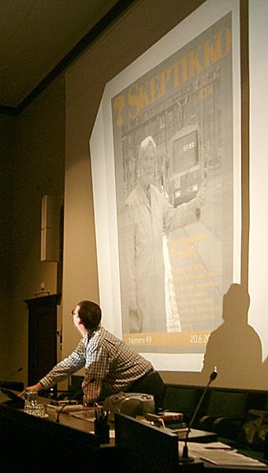

Skepsiksen syyskuun luentotilaisuus oli omistettu edesmenneelle Nils Mustelinille. Tilaisuudessa muisteltiin Mustelinin elämää ja kunnioitettiin hänen elämäntyötään. Paikalle saapuneille Skepsis tarjosi kahvia sekä ”puolikuupullia” ja ”linnunradanviipaleita”.
 Tilaisuuden alussa hiljennyttiin kuuntelemaan Gustav Holstin sävellystä ”The Planets”, minkä Mustelin on Skeptikko-lehden haastattelussa (2/2001) maininnut olevan ainoa hänen tuntemansa klassinen sävellys, jonka innoittajana on ollut astrologia.
Sitten Skepsiksen puheenjohtaja Matias Aunola esitti videonpätkiä Mustelinin lukuisista tv-esiintymisistä.
– Nils Mustelin osoitti, millainen tiedemies voi parhaimmillaan olla: tunteikas ihminen, eikä mikään kone, joka ajattelee maailmaa jonkinlaisena kellopelinä, Aunola kiitteli.
Skepsiksen puheenjohtajana 1995–1998 toiminut Ilpo V. Salmi palasi puheenvuorossaan kirjaan ”Elämää maailmankaikkeudessa?”, josta Mustelin sai valtion tiedonjulkistamispalkinnon 1980. Salmen mukaan kirja on edelleenkin vankka ja perusteellinen pohdinta asioista.
– Käsitteitä, joita Nils otti kirjassaan esiin, pohditaan vieläkin; kuten esimerkiksi sitä, mikä on elämä.
Salmi totesi, että nykyisin elämän käsitettä pohdittaessa korostuu informaation tallentamisen ja siirtämisen osuus. Yksinkertaisinkin solu sisältää valtavan määrän dataa. Miten se on joutunut sinne, on kysymys joka siirtyy biologiasta filosofian puolelle.
– Arkkieliöt löydettiin Mustelinin kirjan ilmestymisen jälkeen. Tämä löydös sijoitti elämän synnyn maapallolla meren pohjalle.
Salmen mukaan enää ei lainkaan varmaa, että elämä on syntynyt maapallolla, sillä aurinkokunnan planeetat vaihtavat paljon meteori-iskuissa irronnutta tavaraa.
– Voi olla niin, että naiset eivät ole Venuksesta ja miehet Marsista, me kaikki voimme olla kotoisin Marsista. Tai vieläkin pidemmältä: elämä koko aurinkokunnassamme saattaa hyvinkin olla muualta tullutta. Elämän syntyä tutkittaessa tiilet ovat kasassa, mutta piirustukset puuttuvat. Asia on edelleen auki.
Salmi kertoi, että Mustelin laski kirjassaan älykkäiden sivilisaatioiden mahdollisuuden maailmankaikkeudessa melko isoksi.
– Äly on evoluution tulos. Jos evoluutio tapahtuisi uudestaan, lopputulos olisi kuitenkin täysin erilainen. Se olisi sellaisen kognitiivisen muurin takana, jota emme voisi millään ymmärtää. Siksi voimme etsiä vain humanoidista vierasta älyä, Salmi sanoi.
”Älyttömämpää” elämänmuotoa voi hänen mukaansa olla ymmärtävinään, mutta toisinpäin asia ei toimi: voimme tutkia muurahaispesää, mutta se ei meitä. Delfiinejä pidetään yleisesti älykkäinä, mutta ne tuskin voivat ymmärtää, että me ihmiset emme pysty nukkumaan aivopuolisko kerallaan, niin kuin ne tekevät.
– Sivisilisaatiomme on nuori, vasta esikouluvaiheessa. Jos jostain maailmankaikkeudesta älykäs yhteys meille tänne maapallolle tulee, sieltä saattaa ilmestyä sellainen rehtori, jolle meillä ei ole mitään sanomista.
– Tietoisia sivilisaatioita saattaa olla esimerkiksi yksi per galaksi. Meillä on siis ehkä miljardeja kohtalotovereita tuolla jossakin, mutta kirjeenvaihtokavereita ei kuitenkaan taida löytyä, Salmi arvioi.
Skepsiksen hallituksessa viisi vuotta vaikuttanut Robert Brotherus muisteli puheenvuorossaan kesää 1992, jolloin hän saapui takaisin Suomeen Atlantic Collegen lukiosta Britanniasta.
Hänen suhtautumisensa ihmisten ajattelukykyyn oli silloin muodostunut melko kyyniseksi. Hän oli tutustunut lukiossa lukemattomien eri uskontojen, uskomusten, ja paraoppien edustajiin ja väitellyt monien kanssa. Kaikki puolustivat uskomuksiaan sitkeästi niiden keskinäisestä ristiriitaisuudesta huolimatta ja keplottelivat erilaisilla kepulikonsteilla Brotheruksen vasta-argumenttien ohi.
– Välillä mieleeni alkoi hiipiä ajatus, että olenkohan minä ainoa täysjärkinen ihminen tässä huuhaan läpitunkemassa maailmassa.
Suomessa kävi onneksi nopeasti ilmi, että hengenheimolaisia oli olemassa: Kirjakaupassa Brotherus törmäsi ”Paholaisen Asianajaja” -kirjaan ja liittyi silloin viisivuotiaan Skepsiksen jäseneksi jo muutaman sivun sporalogiaa ja ”muuta ihastuttavaa” luettuaan.
Nils Mustelinin hän tapasi ensimmäistä kertaa saman vuoden syksyllä Skepsiksen syyskokouksessa. Tuossa kokouksessa Nils päätti oman kolmevuotisen rupeamansa Skepsiksen puheenjohtajana ja Brotherus aloitti itse oman viisivuotisen hallitustyönsä.
– Kyseisen syyskokouksen jälkeen lähdimme Nilsin kanssa samalla autokyydillä kohti keskustaa. Hän oli silminnähden hyvällä tuulella ja sanoi heti autoon istuuduttuaan: ”Ja nyt Classic FM päälle!” Ja sitä kuunneltiin samalla, kun juteltiin Skepsiksen historiasta ja tulevaisuudesta.
Nils Mustelin oli hyvin älykäs ihminen, juuri sellainen ”täysijärkinen” hengenheimolainen, jollaisia Brotherus oli mielessään kaivannut. Mustelinin artikkelit auttoivat häntä myös kehittämään omaa argumentointitaitoaan. Hän huomasi, että vertausten käyttö ja jopa parodia ovat usein tehokkaampia tapoja paraväitteitä vastaan kuin puhdas tieteellinen kritiikki.
Mistä tiedämme, että vieraita avaruusaluksia ei vieraile ilmakehässämme? Mihin tieteellisiin tosiseikkoihin perustuu se, että planeetat eivät vaikuta elämäämme? Tai että homeopatia ei paranna ihmisiä? Tällaisten kysymysten tieteellinen käsittely, niin tärkeää kuin se onkin, on Brotheruksen mukaan usein monimutkaista ja luonnontieteitä tuntemattomalle kadunmiehelle vähemmän vakuuttavaa.
– Mutta sopivat vertaukset ja rinnastukset voivat viedä pointin tehokkaasti perille.
Brotherus kertoi esimerkin: eräässä pakinassaan Mustelin vertaa vaihtoehtolääkintää vaihtoehtoautokorjaamoon, jossa jakoavainten ja muttereiden sijaan käytetään auton oireiluun ”pehmeitä” menetelmiä kuten kristalleja ja parantavia värähtelyjä – näillä auton ”kosmiset energiat” tasapainotetaan konepeltiä avaamatta. Ja jos oireet eivät lievity, se ei tietenkään ole korjaajan vika, vaan johtuu autoilijan liian heikosta uskosta.
– Ihmisen mielellä on taipumus tottua ja turtua omituisiin väitteisiin. Kun tarpeeksi usein kuulee tähtien vaikutuksista, kuolleista heräävistä ihmisistä ja Bermudan mysteereistä, niiden omituisuuteen ja epätodennäköisyyteen ei enää reagoi yhtä voimakkaasti. Tällöin sopiva vertaus tai parodia voi jälleen havahduttaa näkemään parauskon todellisen onttouden.
Nils Mustelin toimi niin Skepsiksessä kuin Suomessa laajemminkin ”älyn majakkana”. Mutta skeptismiin ei riitä, että ihmisellä on älyä. Tarvitaan asennetta, halua, tahtoa. Älyä on haluttava käyttää rohkeasti ja hyväksyttävä sen johtopäätökset silloinkin, kun ne eivät kaikkia muita osia mielessämme miellyttäisi. Tällaiseen Nils Mustelin oli Brotheruksen mukaan valmis.
– Vain silloin saadaan aikaan pysyviä tuloksia, kontribuutio, joka kestää jälkipolville saakka eikä huku muotivirtausten vaihtuessa.
Brotherus sanoi, että Nils on toiminnallaan – niin artikkeleillaan, kirjoillaan, esiintymisillään, ihmissuhteillaan kuin yhdistystoiminnallaankin – jättänyt kontribuution, johon vain harvat elämässään kykenevät. Lisäksi Nils osoitti, että aktiiviskeptikot voivat stereotypian vastaisesti olla parauskovia kohtaan suvaitsevaisempia kuin keskimääräinen kadunmies, sillä kun skeptikko ymmärtää uskomusten taustalla olevaa psykologiaa, hän ei yhtä helposti kuin kadunmies tuomitse niihin uskovia vähä-älyisiksi hihhuleiksi.
Yhtä tiukasti kuin Nils oli eri mieltä paraihmisten kanssa, puolusti hän kunkin oikeutta uskoa haluamallaan tavalla, olla väärässä – kunhan ei vahingoita uskollaan muita.
– Vaikka minä siis löysinkin hengenheimolaisia, on totta, että meitä skeptikkoja on vähän ja meidän näkyvyytemme edelleen paljon heikompi kuin huuhaan markkinamiesten. Siksi Nils Mustelin, joka oli valmis panemaan itsensä likoon ja antamaan aikaansa rajatiedon hälventämiseksi tiedolla, oli erityisen tärkeässä roolissa. Myös jokainen hänen esimerkkiään toiminnallaan seuraava on tärkeä. Ellei muuten, niin siksi, että maailmankuvaansa pohtivat nuoret, kuten minä aikoinaan, eivät kokisi jäävänsä yksin, jos päätyvät valtavirtaa vastaan pitämään yllä kriittistä ja skeptistä suhtautumista uskomattomiin väitteisiin.
Tilaisuuden lopuksi pidettiin hiljainen hetki Nils Mustelinin muistolle.
Artikkelin kirjoittaja Risto K. Järvinen on Skeptikko-lehden päätoimittaja.